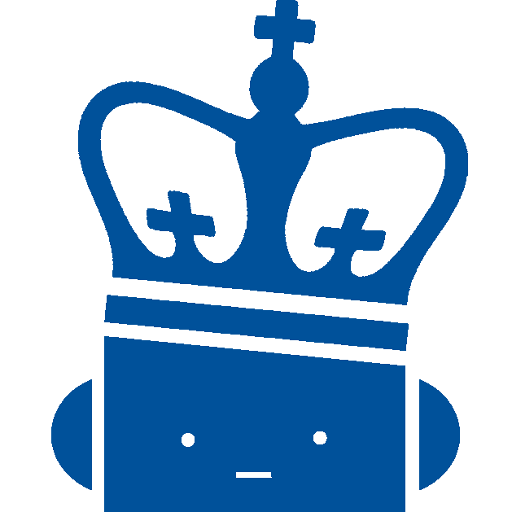
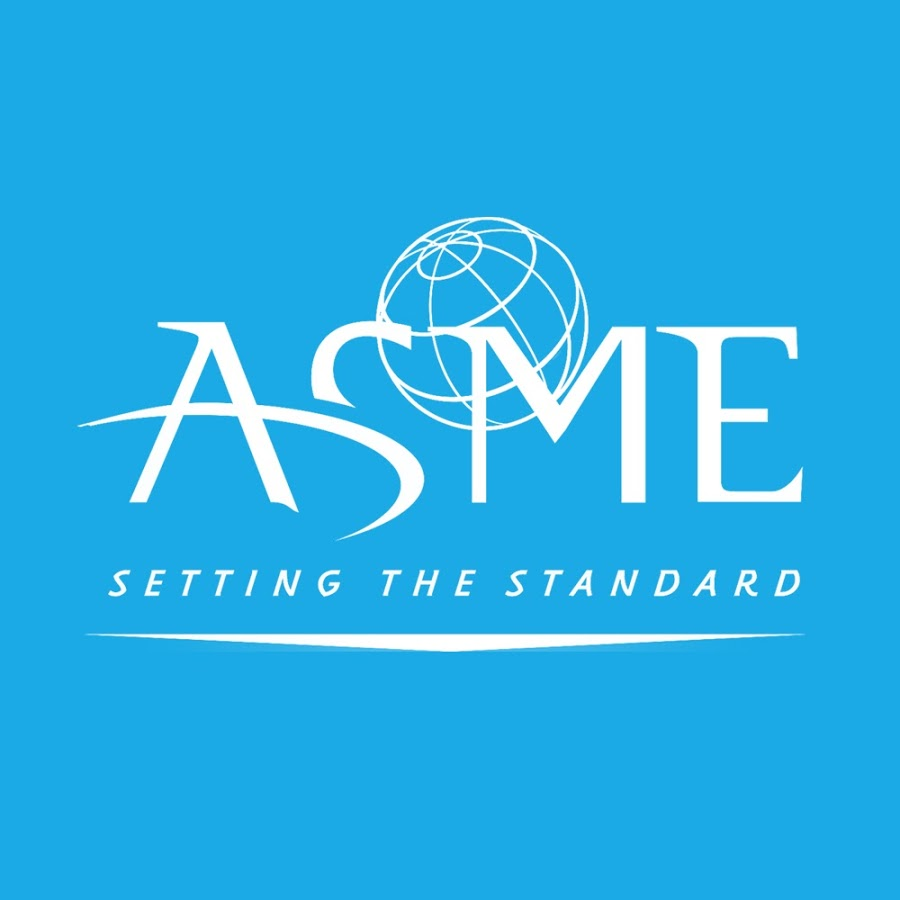
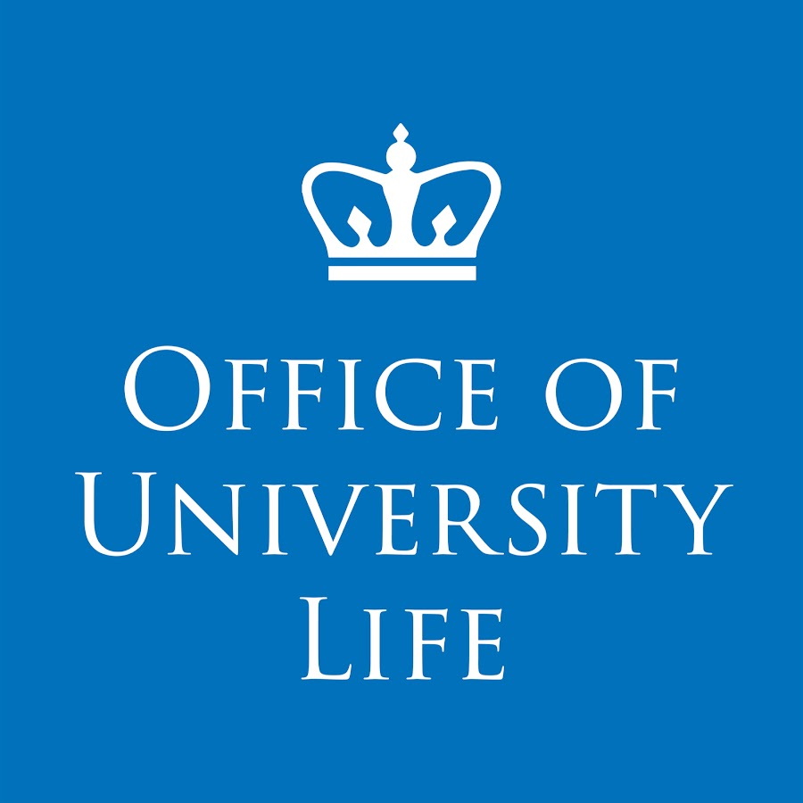
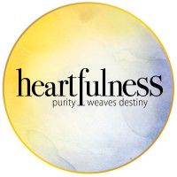
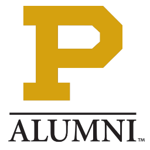
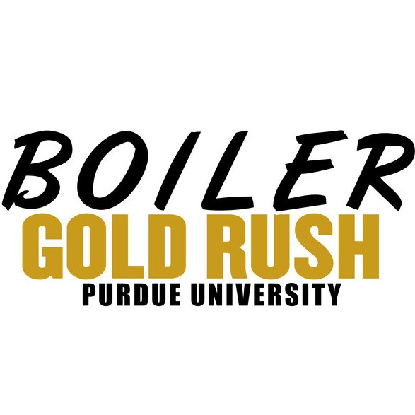

Leadership and Volunteering
My volunteer experience is listed below:

Columbia Robotics Club
Career and Alumni Lead
Sep 2021 – Present

ASME Standards Development Committee
MAM Subcommittee on Robotic Arms (Manipulators)
Feb 2021 – Present
• Contributed to the development and maintenance of standards for robotic arms.
• Actively participated in committee discussions and work assignments.

Task Force on Inclusion and Belonging
Columbia University Member
Sep 2020 – Apr 2021
• Cultivated an equitable and inclusive campus culture to support fellow students' sense of inclusion and belonging.
• Deployed active listening strategies, built awareness, interrupted exclusion and promoted self-care.
• Developed responsive strategies to bring together people with different identities, backgrounds and experiences.
• Learned to communicate across differences.

Heartfulness Institute
Youth Program Coordinator
Jun 2019 – Apr 2021
• Started a new program to engage the youth to be more involved in the community.
• Outreached within the community and brought together people of all social, educational and economic backgrounds, on the basis of spirituality.
• Conduct discussions with members regarding the practice.

Purdue Alumni Recruitment for Tomorrow
Alumni Representative
Jan 2020 – Aug 2020
• Represented Purdue Engineering at college fairs and shared experiences with prospective and admitted students at information sessions.

Purdue Boiler Gold Rush International (BGRi)
Team Leader
Jan 2013 – May 2014
• Brought together a diverse team of 8 students from all races and ethnicities.
• Introduced cross cultural training programs, such as FISH! Philosophy, to the teams and professional staff.
• The FISH! Philosophy allows organizations to be successful, build strong relationships and make incredible experiences for others.

Lions Club
Volunteer
May 2012 – Aug 2016